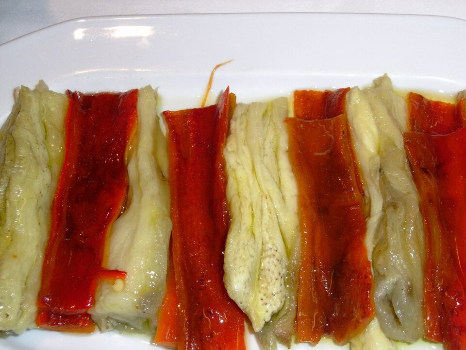
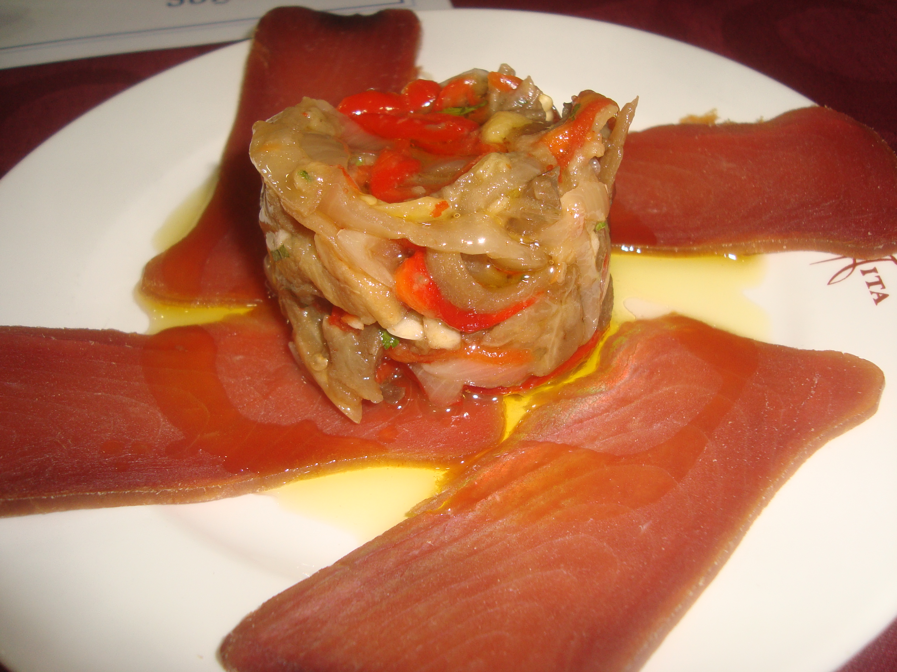

Escalivada
L’escalivada és un dels plats més representatius de la cuina catalana, elaborat amb verdures rostides que concentren tot el seu sabor. Pebrots, albergínies i cebes es couen lentament fins que queden tendres i aromàtiques, absorbint el toc fumat característic de la cocció tradicional. El resultat és un plat senzill però profundament saborós, que reflecteix l’essència de la cuina mediterrània.
Per preparar una bona escalivada, col·loca les verdures senceres al forn o directament sobre la flama, girant-les de tant en tant perquè es coguin de manera uniforme. Quan la pell estigui ben torrada, deixa-les reposar tapades perquè sigui més fàcil pelar-les. Un cop netes, talla-les en tires i amaneix-les amb oli d’oliva verge extra, un polsim de sal i, si vols, un toc d’all picat per potenciar-ne el gust.
L’escalivada és increïblement versàtil: pots servir-la com a entrant, com a guarnició de carns i peixos, o damunt d’una torrada cruixent amb anxoves o tonyina. També combina molt bé amb formatges frescos o amb un raig de vinagre suau per donar-hi un punt d’acidesa. És un plat lleuger, saludable i ideal per compartir, especialment quan es prepara amb verdures de temporada.

